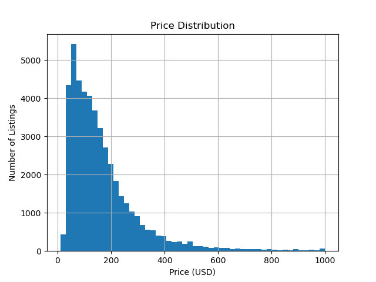
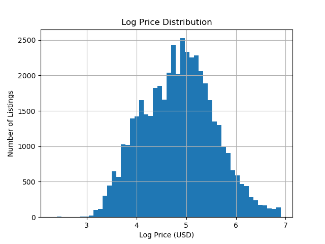
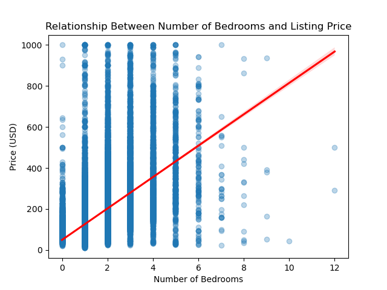
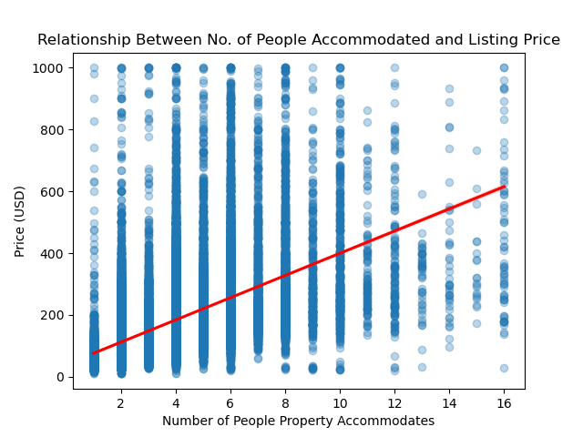
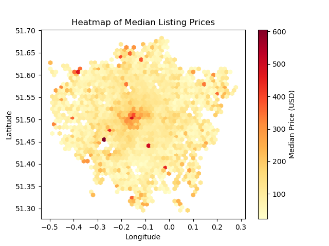
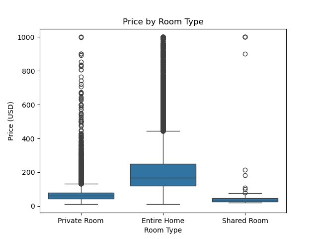
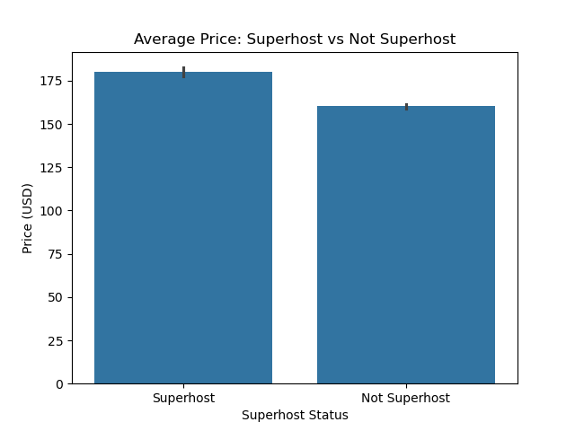
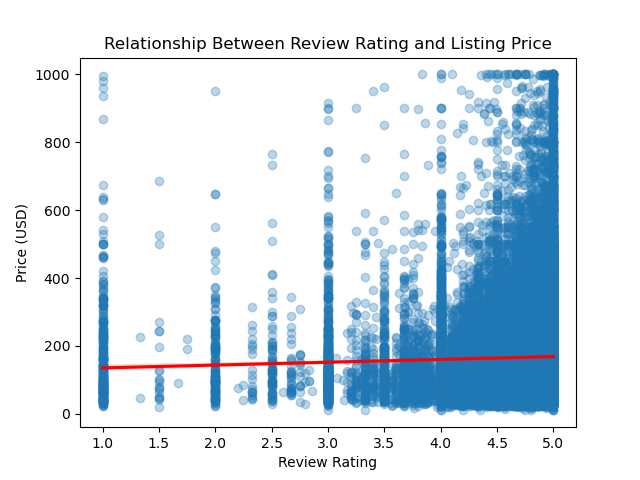
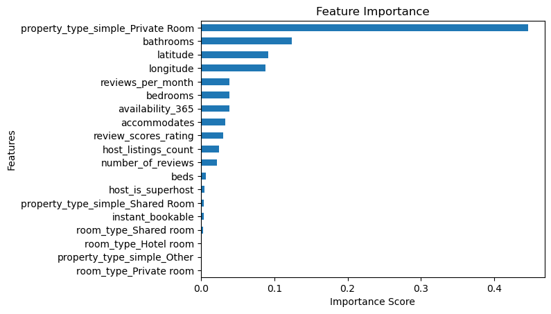
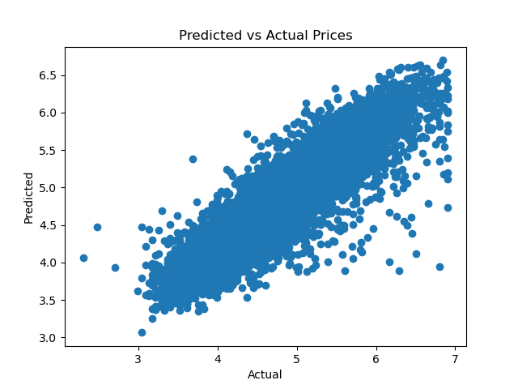

BEE2041 Empirical Project exploring what property and location factors determine Airbnb listing prices in London
This project analyses Airbnb listings in London to identify key drivers of price and build predictive models. Using a combination of geographical data and property characteristics, the project aims to provide insights for both hosts (for pricing strategy) and guests (for seeking value).
1. Data Collection: Sourcing raw CSV data from Inside Airbnb
2. Data Cleaning: Handling missing values, removing outliers, and log transforming price to handle skewness
3. Data Analysis: Visualising price distribution and comparing correlations
4. Modelling: Training and evaluating Linear Regression & Random Forest models
5. Conclusion: Evaluating feature importance and the performance of the model
| Model | Result |
|---|---|
| Linear Regression R Squared | 0.621 |
| Random Forest Regression R Squared | 0.797 |
The data for this project was obtained from Inside Airbnb, a project that provides data that quantifies the impact of short-term rentals on housing and communities. Using this pre-complied dataset from a reputable source ensures that the project is reproducible.
df = pd.read_csv(url, compression="gzip") the CSV was loaded into the notebook and then saved locally using df.to_csv("../data/raw/london.csv", index=False). Finally, df.shape was used to ensure the data had been loaded correctly.
The raw dataset for Airbnb prices in London contained 79 columns, many of which were irrelevant for price prediction (e.g. picture_url). As such, the process of cleaning the dataset focused on converting data into a consistent and easily readable format, whilst maintaining the integrity of the observations.
The 16 desired columns were identified and listed using a list labelled cols. Then, in order to preserve the original dataset, a new dataset was created consisting of only these desired columns.
cols = [
"price",
"accommodates",
"bedrooms",
"beds",
"bathrooms",
"property_type",
"room_type",
"latitude",
"longitude",
"review_scores_rating",
"number_of_reviews",
"reviews_per_month",
"availability_365",
"host_is_superhost",
"host_listings_count",
"instant_bookable"
]
# Create new DataFrame with only the desired columns
df_1 = df[cols].copy()The price column was converted from a currency string to a float and after checking for missing values, any row containing these was dropped.
# Change price from a string to a float
df_1["price"] = df_1["price"].replace(r"[\$,]", "", regex=True).astype(float)
# Check for missing values
print(df_1.isnull().sum())
# Drop rows with missing values
df_1 = df_1.dropna()True and False values were changed to binary integers 1 and 0.
host_is_superhost and instant_bookable are qualitative. By using quantitative measures, our model can calculate a coefficient for a "Superhost Premium".
df_1["host_is_superhost"] = df_1["host_is_superhost"].map({"t": 1, "f": 0})
df_1["instant_bookable"] = df_1["instant_bookable"].map({"t": 1, "f": 0})321 listings were identified as being priced above £1,000 per night, which is the threshold for being an outlier, and so these were removed them from the dataset.
# Check number of properties priced above $1000
print(len(df_1[df_1["price"]>1000]))
# Remove these extreme outliers
df_1 = df_1[df_1["price"] <= 1000]
The raw property_type column contained over 90 individual category types. To allow this to be reflected in our model, this was simplified into 4 groups.
get_dummies was used to convert these simplified groups into the binary format needed to run our regression models.
# Simplify property_type
df_1["property_type_simple"] = df_1["property_type"].apply(
lambda x: "Entire" if "Entire" in x
else "Private Room" if "Private room" in x
else "Shared Room" if "Shared room" in x
else "Other"
)
# Drop original property_type column
df_1 = df_1.drop("property_type", axis=1)
# Encode category columns
df_1 = pd.get_dummies(df_1, columns=[
"property_type_simple",
"room_type"
], drop_first=True, dtype=int)
Finally, a log transformation was applied to the price column.
# Log transform price
df_1["log_price"] = np.log(df_1["price"])
Before modelling, data analysis was conducted to identify relationships between variables, any instances of multi-collinearity, and check the decisions made during cleaning.








To better understand how property and location factors affect Airbnb listing prices in London, predictive machine learning was utilised. We compared a traditional Linear Regression to a Random Forest Regression to help predict listing values and rank the most important features in making these predictions.
random_state=42 to ensure reproducibility so that if the notebook is run again the same results will occur.
# Define X and y
X = df.drop(["price", "log_price"], axis=1)
y = df["log_price"]
X_train, X_test, y_train, y_test = train_test_split(
X, y, test_size=0.2, random_state=42
)
# Create a baseline linear regression model
lr = LinearRegression()
lr.fit(X_train, y_train)
y_predict_lr = lr.predict(X_test)
# Evaluate model
print("Linear Regression R Squared:", r2_score(y_test, y_predict_lr))
print("Linear Regression Root Mean Squared Error:", root_mean_squared_error(y_test, y_predict_lr))
# Create Random Forest Model
rf = RandomForestRegressor(n_estimators=100, random_state=42)
rf.fit(X_train, y_train)
y_predict_rf = rf.predict(X_test)
# Evaluate model
print("Random Forest R Squared:", r2_score(y_test, y_predict_rf))
print("Random Forest Root Mean Squared Error:", root_mean_squared_error(y_test, y_predict_rf))
| Metric | Linear Regression | Random Forest |
|---|---|---|
| R² | 0.621 | 0.797 |
| RMSE | 0.443 | 0.324 |


This project aimed to predict the listing prices of Airbnbs in London using machine learning techniques. By analysing various property features, such as location (latitude and longitude) and room types, models were developed to better understand the primary drivers of rental costs in London.
This project demonstrates that while London's rental market is complex, approximately 80% of its pricing behavior can be explained through different property features and location. The analysis of this dataset successfully identifies that the type of listing, the bathroom count and the location are more predictive of price than the popularity of a property (the number of reviews). This analysis can be used by hosts looking to optimise their listing price, suggesting that they should focus on the privacy of the room and the number of available facilities. While for guests, the data suggests that moving slightly further out of Central London offers better value without necessarily sacrificing the quality of the property.